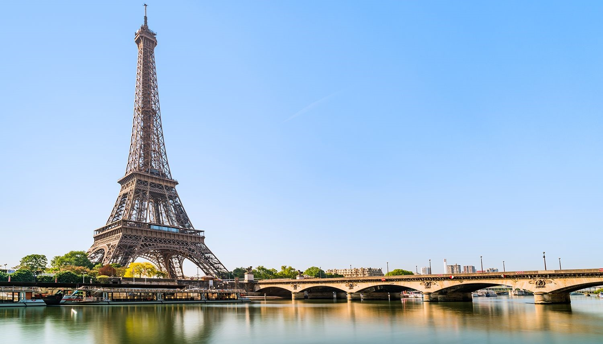
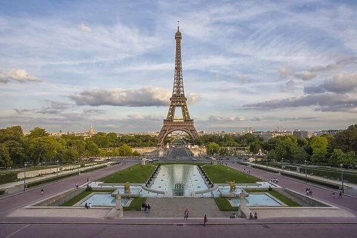
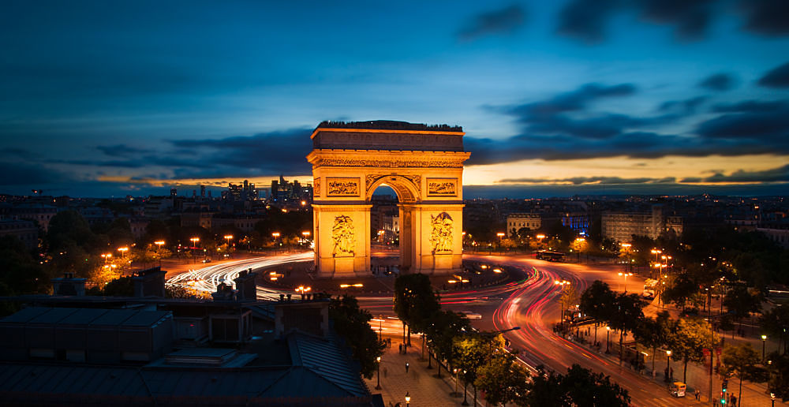
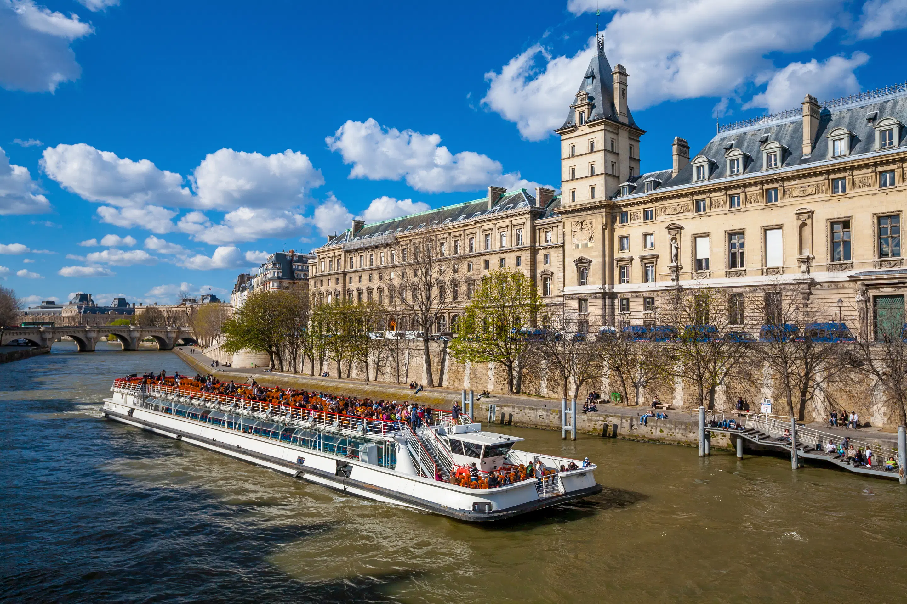
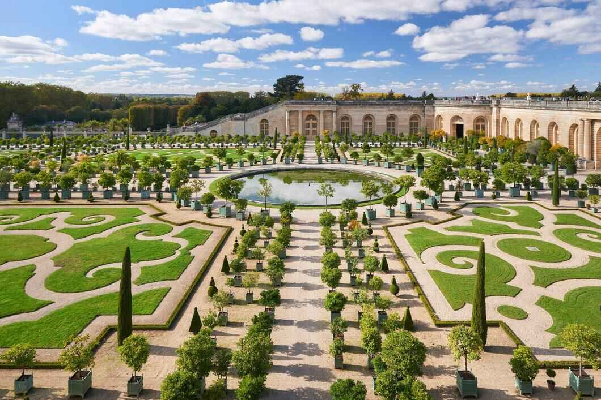
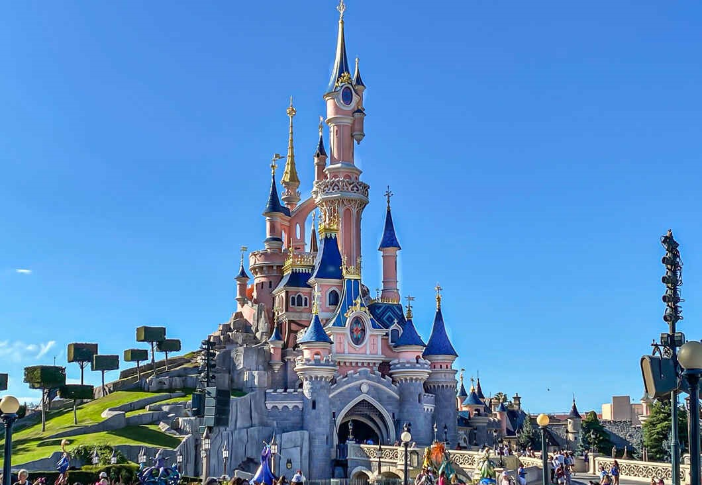

Paris
Welcome to Paris, the City of Light! Known for its stunning
architecture, rich history, & vibrant culture, offers blend of art,
fashion, and gastronomy. Paris promises unforgettable experiences.
Why Travel to Paris...?
Traveling to Paris is an unforgettable experience filled with iconic landmarks, rich culture, and culinary delights. Marvel at the breathtaking Eiffel Tower, explore masterpieces at the Louvre, and soak in the history at Notre-Dame Cathedral. Indulge in exquisite cuisine at Michelin-starred restaurants and charming cafés, or discover the vibrant art scene at the Musée d'Orsay. Fashion enthusiasts can shop at luxurious boutiques along the famous Champs-Élysées, while the city’s stunning architecture and romantic ambiance invite leisurely strolls through picturesque streets and gardens. With its lively nightlife, diverse activities, and year-round cultural events, Paris promises a magical adventure for every traveler. Plus, its efficient public transportation makes exploring the city and nearby attractions a breeze!
Best Places to Visit!
- Eiffel Tower, Champ de Mars
The Eiffel Tower is one of the most iconic landmarks in Paris and was once the tallest building in the world. It was built for the 1889 World's Fair, and at 1,063 feet high, it is still one of the city's most popular attractions. It's a great place to see the city from above.
- Location: Champ de Mars, 5 Av. Anatole France, 75007 Paris, France.
- Timings: 9 AM to 11:30 PM.
- Entry Fees: €18.10-€28.30 for adults, €5.60-€14.10 for youths aged 12-24, €2.80-€7.10 for children aged 4-11.

- Arc de Triomphe, Pl. Charles de Gaulle
The Arc de Triomphe is located on the Champs Elysees, just across from the Louvre Museum. It's an enormous archway built by French architect Jean Chalgrin that honours those who died fighting for France during the Napoleonic Wars. It has become a symbol of France and Parisian culture over time and can be seen throughout the city on posters, calendars, and other souvenirs.
- Location: Pl. Charles de Gaulle, 75008 Paris, France.
- Timings: 10 AM to 10:30 PM.
- Entry Fees: €12 for adults.

- Seine River, Dijon
Flowing across Central Paris, the Seine River is one of the most popular tourist destinations here. There are multiple ways to enjoy the beauty of this river. One of the most popular ones is to cruise on a tour boat to witness some of the most stunning buildings and architecture of Paris on the banks. You can also take walks along the banks or across the bridges.
- Location: Northwest of Dijon.
- Timings: 24/7
- Entry Fees: Free

- Palace of Versailles, Place d'Armes
The Palace of Versailles is one of France's top tourist destinations, with many acres of gardens and stately rooms filled with paintings and furniture dating back hundreds of years. The palace was once home to French kings but now only remains as a symbol of royal power in France today.
- Location: Place d'Armes, 78000 Versailles, France.
- Timings: 9 AM to 5:30 PM, closed on Mondays.
- Entry Fees: Free

- Disneyland Paris, Boulevard de Parc
If you are visiting Paris with kids, visiting Disneyland should be on your bucket list. Located in Central Paris, it is a great destination for multiple fun-filled activities and entertainment. The highlights include the Disneyland theme park with Sleeping Beauty's castle and the Walt Disney Studios. The Big Thunder Mountain is again popular among the kids.
- Location: Boulevard de Parc.
- Timings: 9:30 AM to 9:00 PM.
- Entry Fees: Starts from €67

More Places to Visit!
Click here!